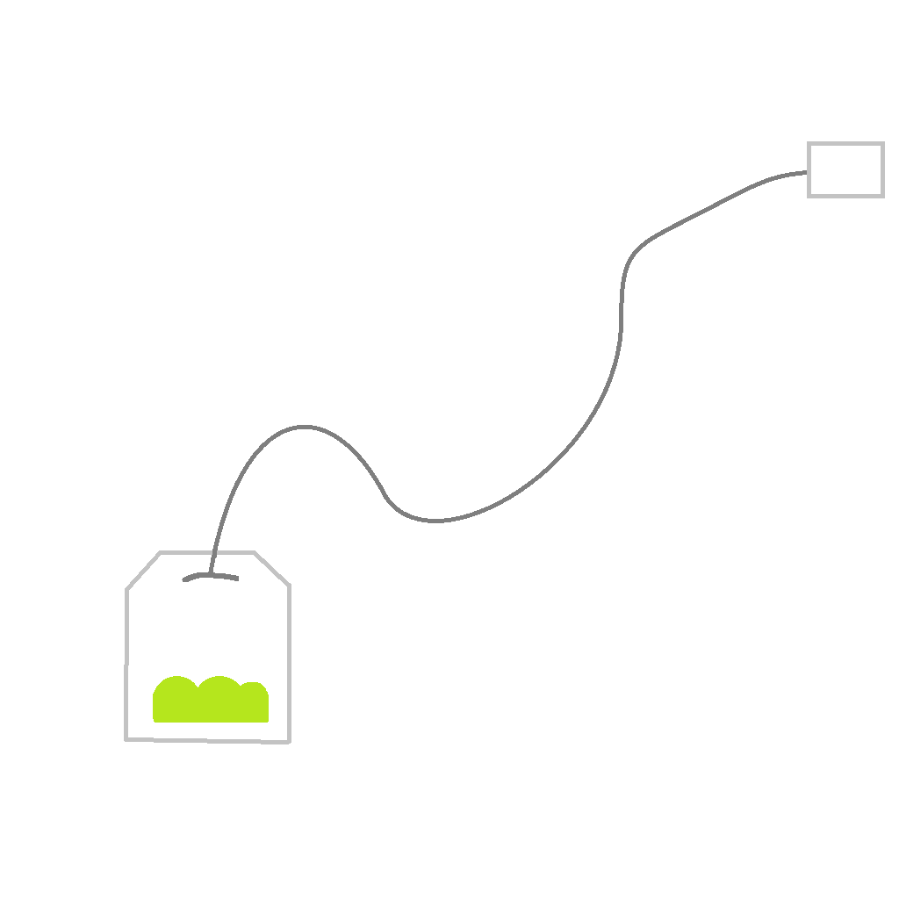

404

Abbiamo perso il filo della bustina!
Non riusciamo a trovare la pagina che cerchi: il link potrebbe essere vecchio o il contenuto è stato spostato altrove. Non preoccuparti, il bollitore è ancora acceso!
Puoi tornare alla Home per scegliere un nuovo infuso o contattarci se il problema non si risolve!